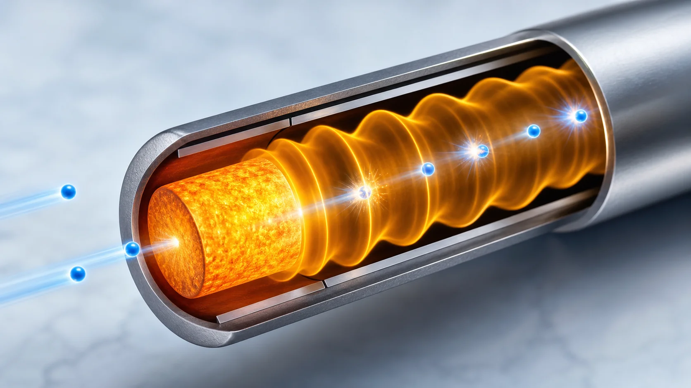
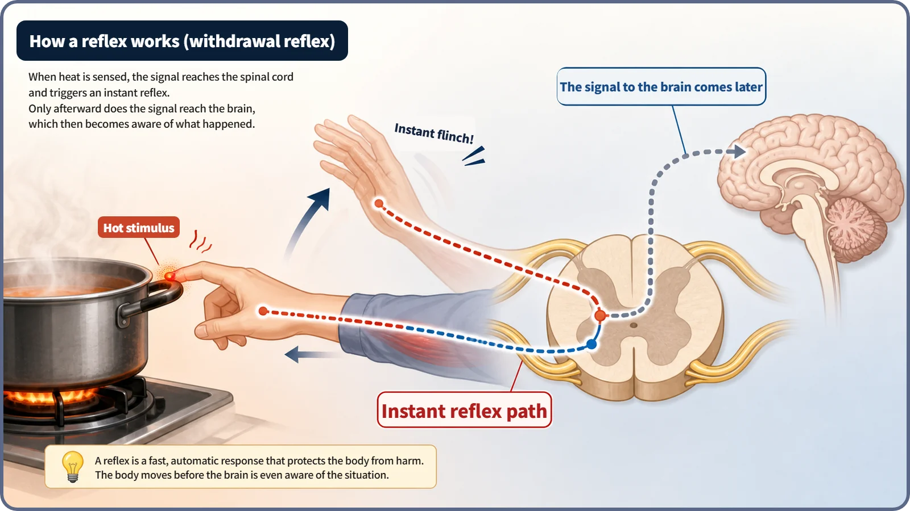
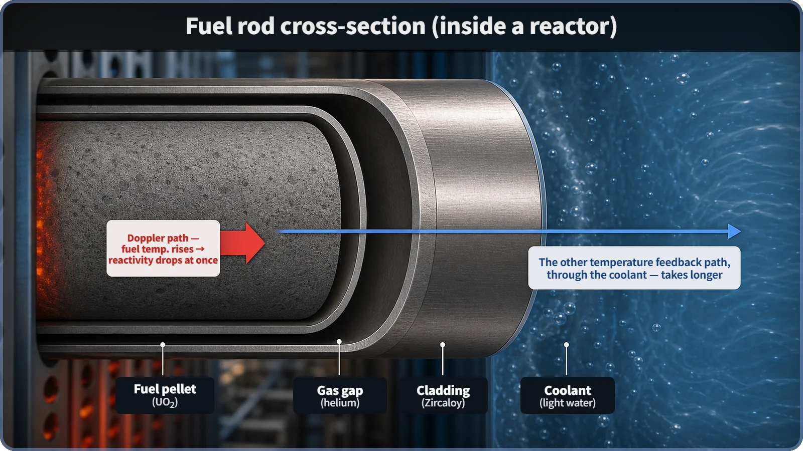

Reactor Kinetics & Reactivity · 118
The Instant Your Hand Jerks Off a Hot Handle — Why Doppler Feedback Is Immediate
The temperature rise and the reactivity drop happen in the same solid fuel, so this feedback never has to wait for heat to travel.

Doppler feedback is the fastest of a reactor's temperature feedbacks: when fuel temperature rises, uranium-238's resonance absorption peaks broaden, more neutrons are captured, and reactivity drops at once. It is immediate because the temperature rise and the reactivity drop happen in the same place, inside the solid fuel, with no wait for heat to reach the cladding and coolant, much like a spinal reflex that never waits for the brain.
Faster than a thought
Most of us have absent-mindedly grabbed a hot pot handle on the stove. Before you can think, "That's hot, I should let go," your hand has already sprung away. The reaction comes first; the thought trails behind.
Here's the interesting part: that jerk isn't ordered by your brain. A round trip to the brain and back takes time. Instead, the signal is handled on a much shorter route in the spinal cord, and the hand muscles get their "let go" order straight from there. That's a spinal reflex, and because the signal skips the long way around, it beats every other response.
Something strikingly similar happens inside a reactor. When reactor power rises, the fuel temperature rises too, and several natural feedback paths act to lower reactivity (the value that says how far the reactor is from its critical balance). Of these, one path alone works as instantly as a spinal reflex: Doppler feedback.
A reflex that ends in the spinal cord, and the secret of the short route
The heat-sensing nerves in your fingertip send their signal along two routes. One turns right around in the spinal cord and heads straight back to the arm muscles: very short. The other climbs through the neck to the brain, waits for the brain to "recognize" the situation, and only then sends a command back: much longer. The short route arrives first, so the body moves without waiting for the brain's judgment. The brain does get the signal, but only after the hand has let go, so it can belatedly register, "Ah, that was hot."

Reactor fuel has exactly this kind of short-route response. When power rises, the first thing the heat from fission warms is the fuel pellet itself (nuclear fuel pressed into small cylindrical pellets). And right inside that pellet, without waiting for heat to move anywhere else, reactivity drops. As discussed before, uranium nuclei have sharp "resonance" peaks at particular energies where they absorb neutrons especially strongly. When the fuel temperature rises, the thermal motion of the nuclei becomes more vigorous, and these peaks change from narrow spikes to somewhat broader shapes. Broader peaks catch and absorb neutrons across a wider range of energies, leaving fewer neutrons for fission, so reactivity falls. This effect is called Doppler broadening, and the whole temperature–reactivity relationship is called Doppler feedback (fuel temperature feedback).
The signal doesn't have to go the long way around
Why is this path, of all of them, so fast? The answer is the same as for the spinal reflex. The place where the temperature rises and the place where reactivity drops because of it are physically the same: inside the solid fuel itself. There is no need for heat to conduct out to the pellet surface, cross the narrow gap between the pellet and the cladding (the metal tube enclosing the fuel), pass through the cladding and reach the coolant. The instant the temperature inside the fuel rises, reactivity drops right there.
Reactors also have another temperature feedback path: as the coolant (or moderator) heats up, its density changes, altering its ability to slow neutrons and so changing reactivity. That path only kicks in after heat has conducted to the pellet surface, crossed the gas gap, passed through the cladding and reached the coolant. With several stages of heat transfer, it responds noticeably later, like the signal that travels to the brain and back. The specific time constants vary with reactor type, fuel design and the kind of transient, so this post stays qualitative: the Doppler path is clearly faster.
In short:
Doppler coefficient (fuel temperature coefficient) = dρ/dT_fuel < 0
In words: how much reactivity (ρ) changes per slight change in fuel temperature (T_fuel) is designed to be negative, so a temperature rise always lowers reactivity. And this coefficient responds first and fastest of all the temperature-related coefficients.

What does an ambulance siren have to do with it?
A quick word on the name itself. "Doppler" makes most people think of an ambulance siren that sounds higher as it approaches and lower as it moves away. Right: both are named after the same person, Christian Doppler, and they share a root principle: the relative motion of what you observe changes the width or frequency of the wave or energy you observe.
The mechanism differs, though. The siren effect comes from motion in one direction between source and listener. The nuclei in fuel don't travel anywhere in particular; they jiggle randomly in all directions with temperature (thermal motion). That random motion spreads out the relative speeds between neutrons and nuclei, broadening the resonance peaks. It is an effect of the statistical spread of random thermal motion, not of moving one way.
Telling the neighbors apart
Doppler feedback vs. coolant (moderator) temperature feedback. Both are negative feedback: higher temperature, lower reactivity. But Doppler feedback is an instant path inside the solid fuel, while coolant temperature feedback works only after heat reaches the coolant. Its details are a story of their own; for today, just note that it arrives later.
Doppler feedback vs. control rods and scram. Inserting rods or triggering a scram (an emergency shutdown) are deliberate actions taken on the judgment of operators or control systems. Doppler feedback is an inherent response that physics produces the instant fuel temperature rises. Control rods are like fetching an oven mitt to move the pot; Doppler feedback is the reflex that already happened.
"Thanks to Doppler feedback, a rising temperature is always safe." Not quite. It provides an immediate natural tendency to lower reactivity, not a guarantee of safety in every situation; it is one pillar of a layered safety system, alongside other safety equipment and other feedbacks.
Why it matters
Imagine a situation in which, for whatever reason, a large amount of reactivity suddenly enters the reactor (a reactivity insertion accident). The first and fastest thing to push reactivity back down is Doppler feedback. Before the control rods move, before the coolant temperature has time to change, a force that cuts reactivity starts working the moment the fuel temperature rises. That is why reactor design makes it a key requirement that the Doppler coefficient be clearly negative under all operating conditions. Specific acceptance criteria differ by reactor type and regulator, so none are quoted here.
The order matters for operation too: the core's first self-adjustment always starts on the Doppler path, followed by the slower path through the coolant, just as the hand springs away first and the brain catches up later.
The short version
- Doppler feedback: when fuel temperature rises, resonance absorption in uranium-238 increases (Doppler broadening), so reactivity drops immediately.
- It is fast because the temperature rise and the reactivity drop happen in the same solid fuel, with no wait for heat to reach the cladding and coolant, much as a spinal reflex is fast because it skips the brain.
- The other temperature feedback path, through the coolant (moderator), needs several stages of heat transfer and is clearly slower.
- The Doppler coefficient (dρ/dT_fuel) is designed to be negative under all operating conditions; it is the first inherent safety property to act when reactivity enters suddenly, but it is one fast pillar among several, not a guarantee of safety by itself.